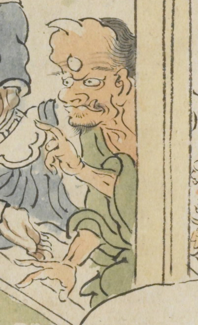

← 图鉴索引

一角の鬼。三つ目で額は長く大きい。上方を指差し、緑色の衣服を着ている
出典：親書誌：U426_nichibunken_0079：酒天童子絵巻；シュテンドウジエマキ／日付：2006／資源識別子：U426_nichibunken_0079_0004_0003
Copyright (c)2010- International Research Center for Japanese Studies, Kyoto, Japan. All rights reserved.